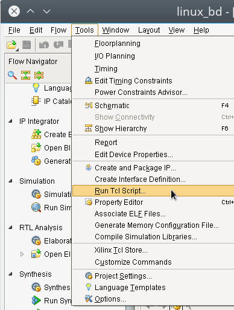
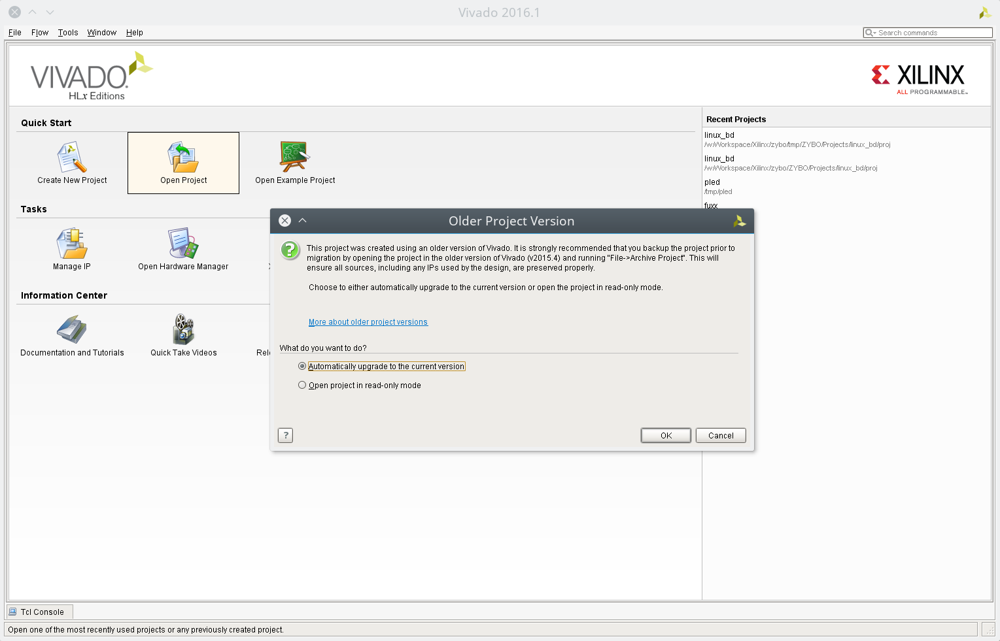
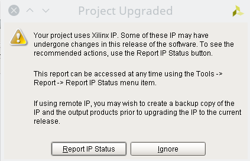
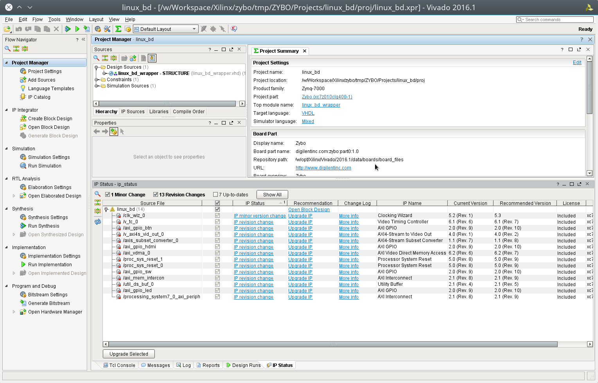
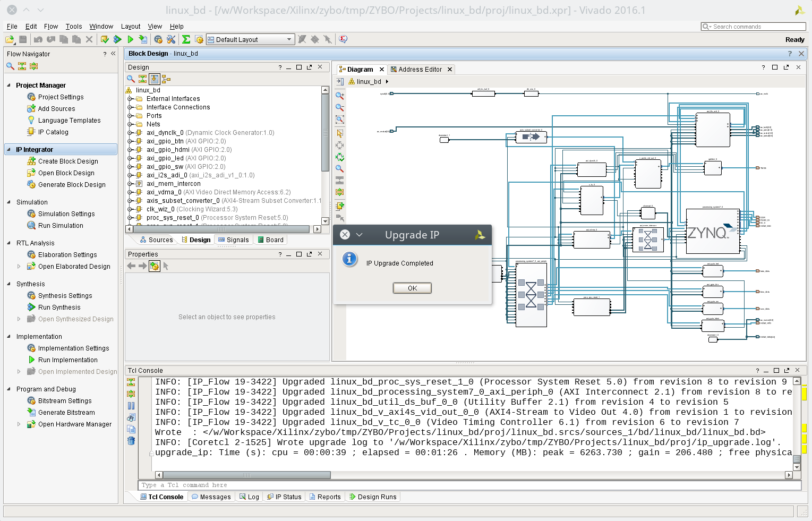
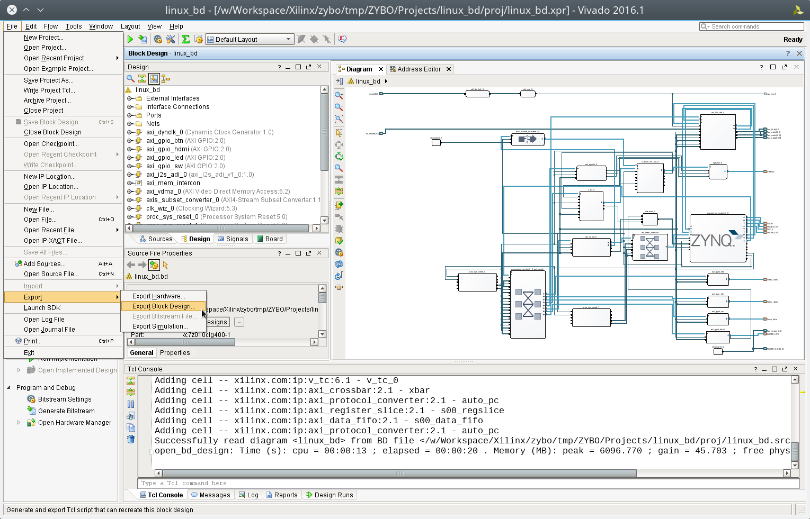

Digilent 針對 Zybo board 用於 Embedded Linux 的環境上，提供了一個預先定義好接腳的設定檔 (zybo_base_system)， 早期的版本 是直接將專案打包起來釋出，後期則採用 git 去進行維護，其專案位於 GitHub 上。
由於 Digilent 提供的 git 版本的 Zybo board 設定檔 會因為 Xilinx 的 Vivado 開發工具的版本升級而變成版本不匹配的狀況，本文將紀錄如何對該設定檔進行升級並產生我們的專案。
在撰寫本文時，該設定檔 commit id 為 177c2c ，使用的是 Vivado 2015.4 版本， 我們要將它升級到 Vivado 2016.1 去。
下載設定檔並用 Vivado 2015.4 開啟
我們首先下載 Digilent 提供的 Zybo board 設定檔
git clone https://github.com/Digilent/ZYBO.git -b vivado-2015.4 63ca49
接著進入到 ZYBO/Projects/linux_bd/proj 資料夾去，使用你的 vivado 2015.4 去產生新的專案
coldnew@gentoo ~/ZYBO/Projects/linux_bd/proj $ /opt/Xilinx/Vivado/2015.4/bin/vivado -mode batch -source create_project.tcl
如果不想用指令，也可以打開 Vivado 圖形界面，選擇 Tools -> Run Tcl Script 然後再選 create_project.tcl 這檔案去執行

完成後，你會發現當下目錄多出了一些檔案
coldnew@gentoo ~/ZYBO/Projects/linux_bd/proj $ tree -L 1 . <b> ├── cleanup.cmd ├── cleanup.sh ├── create_project.tcl ├── ip_upgrade.log <g> ├── linux_bd.cache <b> ├── linux_bd.hw <b> ├── linux_bd.ip_user_files <b> ├── linux_bd.sim <b> ├── linux_bd.srcs <b> ├── linux_bd.xpr ├── vivado.jou └── vivado.log <g> 5 directories, 7 files
這些 linux_bd.* 檔案就是我們透過 Vivado 2015.4 產生的專案，接下來我們要用 Vivado 2016.1 打開它去做升級的動作。
升級設定檔
接下來我們使用 Vivado 2016.1 打開我們剛剛用 Vivado 2015.4 所產生的 linux_bd.* 專案

由於原本的專案是透過 Vivado 2015.4 產生的，因此會被詢問要不要升級，這邊點選 Report IP Status

接下來點選 Upgrade Selected 將這些過時的 IP core 進行升級

沒出錯的話，過一段時間 Vivado 會回報升級完成

升級完成後，我們要產生幾個符合 Vivado 2016.1 的 tcl 腳本 ，這樣以後我們才可以用 Vivado 2016.1 產生我們的新專案
產生 tcl 腳本
好了，現在我們把原本用於 Vivado 2015.4 的 tcl 腳本所產生的專案升級到 Vivado 2016.1 了，實際上導致我們不能夠直接使用 Vivado 2016.1 來產生專案的原因，在於 src/bd/system.tcl 這個檔案和 Vivado 的版本有依賴性，因此我們要重新產生新的 system.tc 去將它替換掉
透過 File -> Export -> Export Block Design 來將新的 block design 匯出

將它存放到 ZYBO/Projects/linux_bd/src/bd/system.tcl 就完成囉~
將預設語言設為 Verilog
Digilent 針對 Zybo board 提供產生專案用的樣板，預設是採用 VHDL 作為這個專案用的硬體描述語言，如果你希望之後這樣建立的專案都是預設使用 Verilog 的話，你可以這樣修改 create_project.tcl
diff --git a/Projects/linux_bd/proj/create_project.tcl b/Projects/linux_bd/proj/create_project.tcl index 825281a..74c726e 100644 --- a/Projects/linux_bd/proj/create_project.tcl +++ b/Projects/linux_bd/proj/create_project.tcl @@ -39,7 +39,7 @@ set_property "default_lib" "xil_defaultlib" $obj set_property "part" $part $obj set_property "board_part" $brd_part $obj set_property "simulator_language" "Mixed" $obj -set_property "target_language" "VHDL" $obj +set_property "target_language" "Verilog" $obj # Create 'sources_1' fileset (if not found) if {[string equal [get_filesets -quiet sources_1] ""]} {
這樣一來，透過 create_project.tcl 建立的專案，不管是 HDL wrapper 或是預設 HDL 都會是 Verilog 囉~
重建新的專案
我們剛剛重建了 src/bd/system.tcl 這個檔案，將其升級到 Vivado 2016.1 版本，現在可以試試重新產生新的專案囉
不過由於我們可能有之前建立好名為 linux_bd.* 的檔案，因此可以透過 cleanup.sh 去將這些產生出來的檔案清除
coldnew@gentoo ~/ZYBO/Projects/linux_bd/proj $ sh cleanup.sh
接下來用 Vivado 2016.1 重新生出新的專案就好囉 ~
coldnew@gentoo ~/ZYBO/Projects/linux_bd/proj $ /opt/Xilinx/Vivado/2016.1/bin/vivado -mode batch -source create_project.tcl